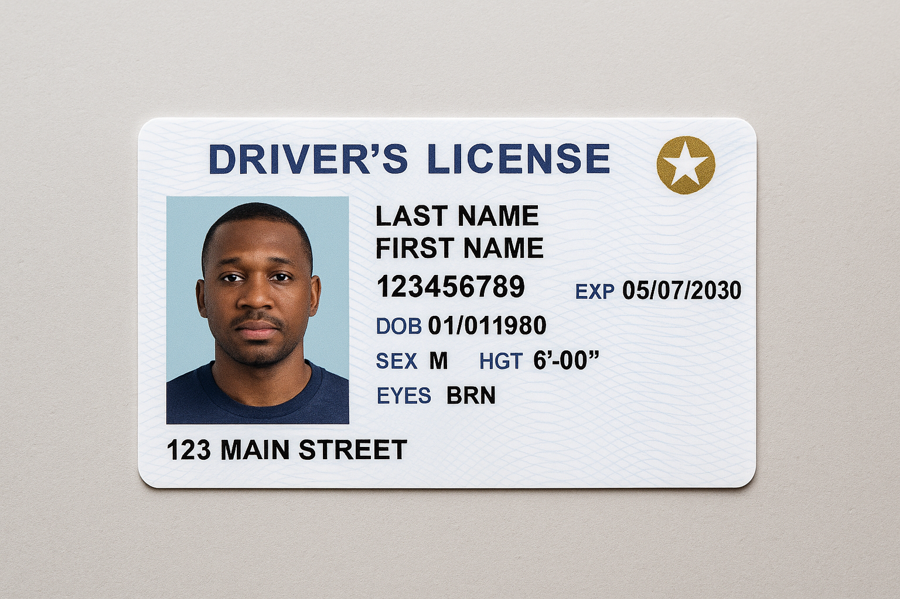

Flying in 2025? Don’t get caught off guard. TSA regulations and tech have changed, and being prepared is key for any road warrior. Here’s what you need to know to stay efficient, avoid delays, and maybe even enjoy your trip through the checkpoint.
If your layover is under 60 minutes, aim for lounges or gates on the same concourse. If it's over 90 minutes, you have time to explore, dine, or grab a quick shower — but don’t lose track of time. Always factor in boarding, not just departure.
Starting May 7, 2025, every traveler 18+ must present a REAL ID-compliant license or passport to board domestic flights. Some states and airlines now allow Apple Wallet / Digital ID with TSA PreCheck — check your eligibility.
TSA is rolling out facial recognition tech for faster ID verification at PreCheck lanes. It’s optional (for now), but opting in can save you time. Look for the "TSA PreCheck Express" signs.
Got time? Head to a lounge (Priority Pass or Amex Centurion lounges are your friends). No lounge access? Use apps like FLIO or LoungeBuddy to find deals and quiet zones.